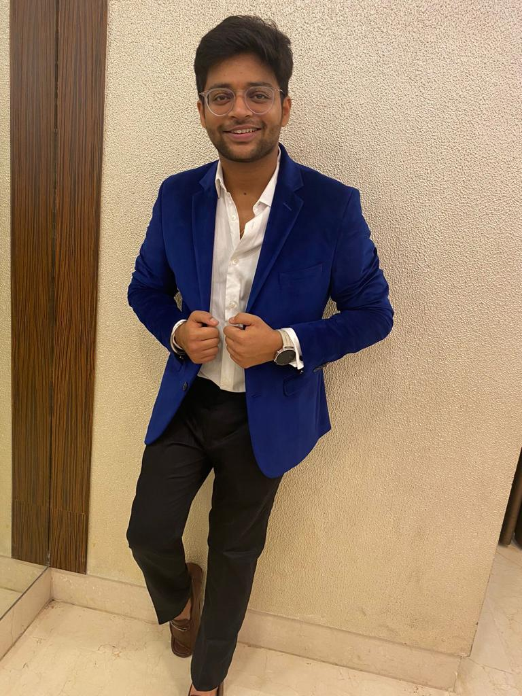

Karan Dave
+44 7774875155 | karandave8@gmail.com | LinkedIn

Summary
I'm a seasoned Content Management professional with over 3 years of experience skilled in Adobe Experience
Manager (AEM) and Contentful. I excel in integrating diverse content types with a sharp focus on quality and
timeliness. With a track record of leading global teams in campaigns, page optimization, and New Product
Introductions (NPIs), I prioritize rigorous quality checks and performance reporting. Currently pursuing a master’s in
information system and business analysis at Aston University, Birmingham, I bring academic rigor and practical
expertise to content management.
Education
Aston Business School, Aston University,
Birmingham 2023 - 2024
Master of Science (M.S.) in Information System and Business Analysis
K.J.Somaiya Institute of Engineering and I.T
Mumbai University 2015 - 2019
Bachelor of Engineering (B.E.) in Electronics and Telecommunication
Work Experience
- Sr. NPI & CX Specialist
VistaPrint UK
September 2023 - Present
- Led end-to-end merchandising for website launches in Australia, New Zealand, and Singapore at VistaPrint
UK.
- Successfully planned, coordinated, and executed projects within allocated budget and timeline.
- Collaborated with cross-functional teams to ensure smooth product delivery.
- Provided senior leadership with valuable product performance insights using Looker and Google Analytics.
- Documented project requirements and facilitated effective meetings.
- Maintained clear and transparent communication with stakeholders at all organizational levels.
- NPI & CX Specialist
Cimpress India
July 2022 - September 2023
- Managed comprehensive merchandising for product launches in Australia, New Zealand, and Singapore
using Contentful CMS.
- Strategically designed family page and new arrivals pages, improving user interaction.
- Led and mentored the merchandising operations team, ensuring seamless execution.
- Directed A/B testing and conducted qualitative research to refine regional strategies.
- Collaborated closely with Project Managers and Product Owners to streamline product launches and
optimization efforts; authored detailed creative briefs for site assets and copy.
- eCommerce Merchandising Operations Specialist
Cimpress India
August 2021 - July 2022
- Collaborated with Australian team to oversee site content for Vistaprint AU, NZ, and SG.
- Led campaign creation and played a pivotal role in campaign strategy, designing Home and Special Offers
pages.
- Utilized Contentful for site optimization, crafted Landing Pages on Builder & Wordpress.
- Monitored and enhanced category and product page performance, improving click-through rates.
- Proficiently managed website publication.
- Web Developer
Accenture Solutions Ltd
December 2020 - July 2021
- Proficient in HTML, CSS, and CMS tools; developed and maintained websites.
- Specialized in crafting custom websites tailored to specific client requirements.
- Collaborated closely with clients, ensuring timely project delivery.
- Expertise in content integration, web page design, and asset/content management using AEM.
Skills
Contentful, AEM Adobe Experience Manager, Wordpress, Builder, Website Management, New Product
Intorductions, MS Office, HTML, CSS, Ability to Multitask, Problem Solving, Team Player, Attention to detail
Awards & Achievements
- 9 times weekly shout out winner for ANZS as an NPI & CX Specialist
- Received three Badges during my tenure with Vista "Hold the BARHIGH", "Co-Create Solutions", "Above &
Beyond"
- Rewarded as Fastest Developer Specialist
Certifications
- Google Analytics Training for Beginners (Udemy)
- Wordpress for Beginners (Udemy)
- Workshop on Web Development
Contact Me